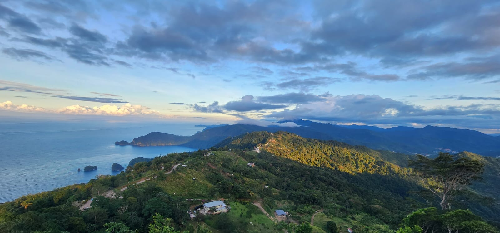

Welcome to the Tourism Highlights of Trinidad and Tobago, a vibrant, exciting, and eventful twin-island nation. The islands boast stunning beaches, lush rainforests, and a rich, diverse cultural background. For the adventurers among us, there are many thrilling and breathtaking adventures to explore. Whether you prefer a simple drive to the popular tourist destination that is Pigeon Point Beach or a daring hike to Paria Waterfall, the twin-island has something for everyone.
Trinidad, the larger of the two islands, is internationally renowned for its electrifying Carnival celebrations, attracting thousands of visitors each year
for a spectacular two-day festival filled with pulsating music, energetic dancing, dazzling costumes, and an unmatched festive atmosphere.
Tobago, on the other hand, is a tranquil, serene paradise known for its pristine beaches, the magnificent Nylon Pool, and the oldest protected rainforest in the Western Hemisphere, The Main Ridge Forest Reserve.
No matter what adventure you seek, Trinidad and Tobago welcome you to explore, experience, and enjoy the best of the Caribbean!
Trinidad's Top Attractions:
Maracas Beach- famous for its scenic views, clear waters, and the popular bake & shark.
Asa Wright Nature Centre- a bird-lovers paradise
Caroni Bird Sanctuary- the home to the Scarlet Ibis
The La Brea Pitch Lake- world's largest natural asphalt deposit
Paria Waterfall & Hiking Trail
La Vigie Lookout, Paramin

Tobago's Top Attractions:
Pigeon Point- white sand, turquoise waters
Nylon Pool- a natural, waist-deep swimming pool in the middle of the ocean
Argyle Falls- Tobago's highest waterfall
Buccoo Reef- a vibrant marine park suitable for snorkeling
The Main Ridge Forest Reserve- the oldest protected rainforest in the Western Hemisphere